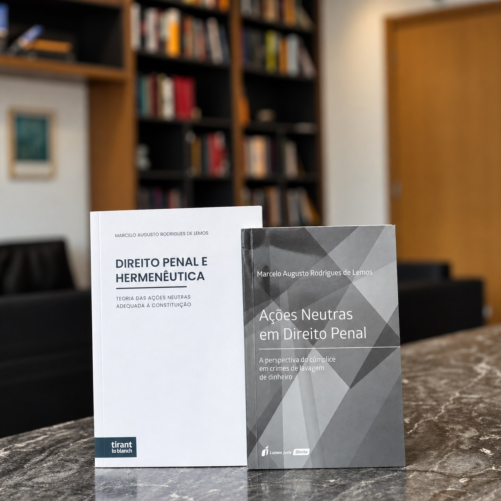

Condutas criminais que surgem no ambiente empresarial e nas relações econômicas, com atenção à individualização das responsabilidades.
A técnica está em distinguir
o que parece do que
juridicamente se sustenta.
Marcelo Augusto Rodrigues de Lemos
OAB/RS 94.933 · OAB/RO 13.901
Advocacia Criminal e Penal Empresarial
ML
Marcelo A. R. de Lemos
Apresentação
Prazer, Marcelo Lemos.
Compreendo a advocacia criminal como uma função essencial à realização da Justiça e à preservação dos limites que legitimam o exercício do poder punitivo. Defender não significa negar a aplicação da lei, mas assegurar que ela seja aplicada de forma constitucionalmente adequada, sem presunções, excessos ou respostas construídas a partir da conveniência do momento.
É no caso concreto que o Direito encontra seus limites e sua razão de existir. Por isso, acredito em uma advocacia comprometida com a técnica, com as garantias fundamentais e, sobretudo, com a responsabilidade de contribuir para decisões juridicamente justas.
Atuação
Onde o Direito Penal encontra a atividade empresarial.
A dinâmica empresarial envolve decisões, atribuições e relações cada vez mais complexas. Quando essas circunstâncias alcançam a esfera criminal, individualizar condutas e compreender os limites da responsabilidade atribuída a cada agente tornam-se questões centrais.
Os limites do tipo penal e o elemento subjetivo exigidos para a imputação de ocultação ou dissimulação de ativos.
Repercussões penais das relações tributárias, observados os pressupostos de tipicidade e a exigibilidade do tributo.
Acompanhamento técnico em inquéritos, investigações e ações penais, em todas as suas fases.
A delimitação da responsabilidade penal de quem ocupa posições de decisão e de gestão.
Casos que exigem leitura dogmática apurada e a articulação entre diferentes áreas do Direito.
Formação
Uma trajetória dedicada às Ciências Criminais.
Doutor em direito
Unisinos
Tese
O desvelamento do dolo nas ações neutras
Mestre em ciências criminais
PUCRS · Ênfase em direito penal econômico
Especialista em direito penal empresarial
PUCRS
Graduado em direito
Unisinos
Publicações
A escrita integra a forma como Marcelo Lemos compreende e exerce a advocacia. Em seus artigos, o direito penal é examinado para além de respostas imediatas, a partir de questões relacionadas à responsabilidade, ao dolo, à interpretação, às garantias fundamentais e aos limites do exercício do poder punitivo.
Artigo em destaque
1.000 advogados
no fundo do mar?
Um bom começo!
Uma reflexão sobre advocacia, direito de defesa e os limites da eficiência na prestação jurisdicional.
Ler artigo →Obras
Quando uma conduta aparentemente neutra passa a interessar ao Direito Penal?
Uma questão examinada por Marcelo Lemos em duas obras dedicadas às ações neutras e aos limites da responsabilidade penal.

Direito Penal e Hermenêutica
Teoria das ações neutras adequada à Constituição
Adquira já →Ações Neutras em Direito Penal
A perspectiva do cúmplice em crimes de lavagem de dinheiro
Adquira já →Atuação conjunta
Há casos em que diferentes especialidades precisam conversar.
Questões criminais podem surgir no contexto de relações tributárias, societárias, empresariais ou patrimoniais. A atuação conjunta permite integrar diferentes perspectivas técnicas, respeitando as atribuições de cada profissional e a relação já estabelecida com o cliente.
O escritório mantém interlocução com advogados e profissionais de outras áreas para a condução conjunta de questões que apresentem repercussões criminais.
Contato profissional →Escritórios
Porto Alegre · RS
Av. Loureiro da Silva, nº 1.940Sala 801
Bairro Cidade Baixa
Porto Alegre/RS
Porto Velho · RO
Av. Lauro Sodré, nº 1.865Letra E V, nº 59
Bairro Pedrinhas
Porto Velho/RO
Atendimento on-line em todo o Brasil.
Contato
Para informações sobre atendimento e atuação profissional, utilize um dos canais abaixo.
Falar no WhatsApp